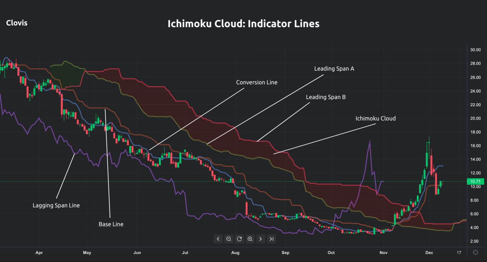
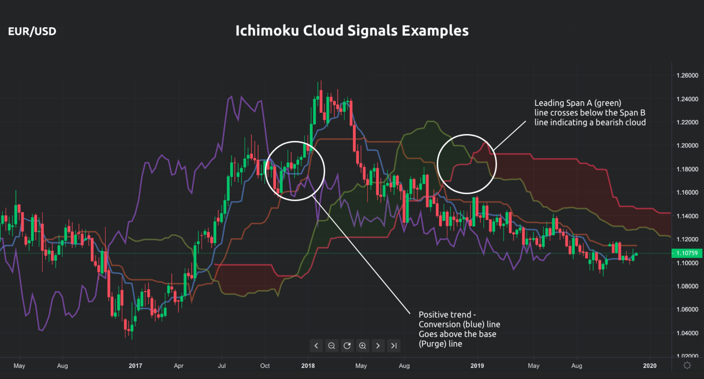

Ichimoku cloud indicator or Ichimoku Kinko Hyo is a versatile “all-in-one” technical analysis indicator incorporating multiple elements represented by different indicators. It was created and first published by the Japanese journalist Goichi Hosoda in 1969.
In simple terms, the Ichimoku indicator provides signals for which you would otherwise apply more indicators at the same time. It is structured in a way to give you information about trend direction, support and resistance levels as well as momentum.
Since the indicator includes multiple information, the Ichimoku chart gives you an insight into the price features through different data points. Hence, when you see the Ichimoku indicator plotted on the chart, it can look confusing or messy because of the multiple lines and areas shown. Nevertheless, understanding the indicator is not as hard as it looks, as long as you know what each element of the Ichimoku indicator represents.
The Ichimoku chart consists of five different lines providing an overview of the price action and two of these lines form a shaded area called the Ichimoku cloud. Accordingly, if you want to grasp the main notion behind the Ichimoku cloud indicator, you should get into the meaning of each line as well as the role of the lines in the Ichimoku setting.
Each Ichimoku indicator component (indicator) represents a certain aspect of the price action and is calculated accordingly. An example of the elements on a trading platform is presented in the next graph.

You can see that there are five lines on the chart along with the coloured area, which represents the cloud. Each of the lines is calculated in a certain way and signifies specific aspects of the indicator. The lines are as follows.
The Conversion line (Tenkan-Sen) – can be perceived as the short-term line and it represents the average of the high and the low for the 9-period (9-period high + 9-period low / 2).
The Base line (Kijun-sen) – is the long-term line and it is calculated as the average of the high and low for the 26-period (26-period high + 26-period low / 2).
The Lagging Span (Chickou Span) – is a lagging line which represents the closing price for the previous 26 periods. This line enables you to easily compare the current price movements with the movements from 26 periods ago.
The Leading span A (Senkou Span A )– is used as a leading indicator defined for future 26 periods. The values for this indicator are obtained as the middle point of Tenkan-sen and Kijun-sen based on the past last 26 periods (Conversion Line + Base Line) / 2)
The Leading Span B (Senkou Span B) – also used as a leading indicator since it is calculated for 26 periods ahead and it is based on the average of the 52 periods high and 52 periods low (52-period high – 52-period low / 2).
The Ichimoku cloud (Kumo) is one of the most notable features presented on the chart, and it is the area between the Leading Span A and the Leading Span B lines. Reading the cloud is not as complicated as it may seem. You will locate a possible signal by determining where the price is located compared to the Ichimoku cloud.
If the price is located above the Ichimoku cloud, then a positive trend is expected
You can expect a negative trend if the price falls below the cloud
A price level located within the cloud is an indication of a flat trend
The changes in the cloud colour occur based on the movement of the leading span line. For instance, if leading Span A crosses above the Leading Span B, the area will be green (the colour used for the cloud can be different depending on the trading platform). The periods stated are the default periods for this indicator. Of course, you can always change this set-up in the indicator settings and adjust them according to your trading strategy.
The Ichimoku trading strategy can offer alerts for potential buy and sell signals since it is able to identify potential trend direction and momentum. The Ichimoku indicator can be beneficial if you want to define stop-loss points, which can be at the support level. Also, the Ichimoku cloud is used by traders because it provides a certain estimation about the future price level. In general, the Ichimoku cloud indicator can be used in your trading strategy for the following.
Determine trend direction – one way to find the trend direction is through the Conversion and Base lines signals. When the Conversion line goes above the Base line, a positive trend is anticipated. The opposite or negative trend is expected when the Base line goes above the Conversion line (shorter period line).
Support and resistance levels – are identified by the leading span A and B lines, which serve as the edges of the Ichimoku cloud. Since the Ichimoku cloud indicator provides price prediction, the cloud edges additionally provide an overview of the current and future support and resistance levels.
Determine crossovers – you look for crossovers between the Conversion line and the Base line. Remember that you should pay attention to the location of the crossover so you can determine its strength. Depending on the type of crossover and whether it is located below, inside or above the cloud, the signal can be weak, neutral or strong.
Ichimoku cloud – it can be bullish or bearish. Look at the Leading Span A and Leading Span B or, more precisely, the position of these lines at the graphic and the cloud. Indication for possible bullish trend appears when the Leading Span A increases above the Leading Span B line (bullish Kumo). A bearish trend can be identified when the Leading Span A decreases or falls below the Leading Span B (bearish cloud). A trend reversal can be evident when Leading Span A and B change their positions. You can determine the strength of the trend by looking at the angle of the Ichimoku cloud, where a steep upward or downward angle indicates a strong trend.
The type of signal depends on the element we look at. There are various signals on the Ichimoku chart...
Conversion/Base line cross
Cloud breakout
Leading Span A and B cross;
Lagging Span cross
Using this indicator means that you are familiar with the different buy and sell Ichimoku signals, which can appear on your chart as well as other signals. Therefore, the Ichimoku strategy can be created around the Ichimoku signals:
Bullish trend – the price is above the cloud
Bearish trend – the price is below the cloud
Ranging trend – the price is in the cloud
Buy signal - Conversion line crosses above the Base line and both lines along with the price being above the cloud
Sell signal – appears if the Conversion line crosses below the Base line while the price and both lines are found under the cloud
Let's look at another graph where we can identify some of the signals originating from this indicator.

You
can see two of the potential types of signals. On the left side of
the middle of the graph, there is a conversion/Base line cross above
the Ichimoku cloud. On the right side, you can see that the Leading
Span A and B cross were signaling a negative movement.